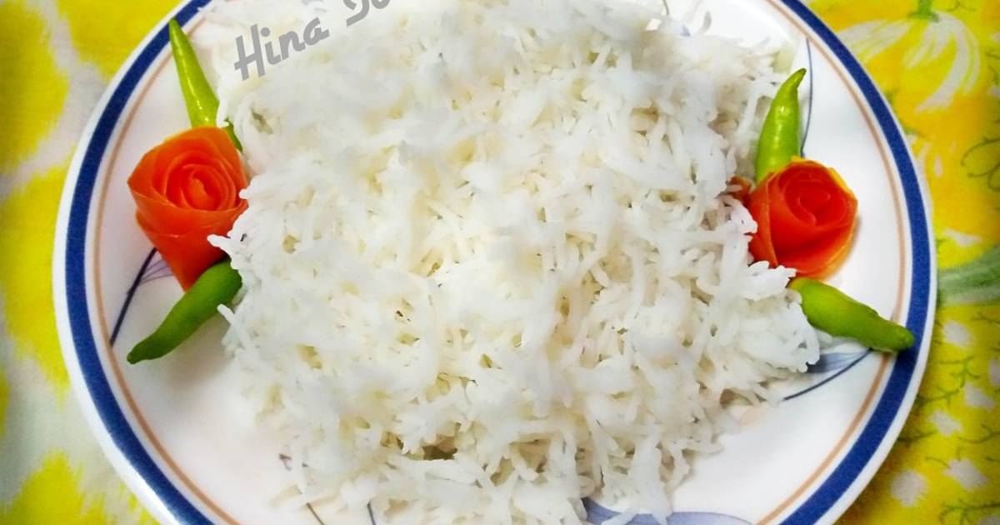

Rice

Description
When cooked, basmati rice grains are long, dry, and separate. They impart a pleasant, nutty aroma and flavor in any dish.
Ingredients
Steps
- Fetch a satisfied amount of water in a pan and put on fire, add salt
- After it boils for 7 minutes, add your plain rice and cover it
- Allow to boil for about 40 minutes and test its readiness
- Remove from fire and get your stew ready
- Your rice is ready to be served